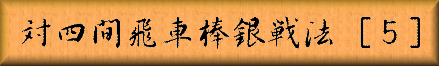

 |
|
||||
|
本章では現在でも指されている四間飛車対棒銀の基本的な攻防を御紹介します。 | |||||
| Figure 1
|
「図１」は前章「図４」と同一局面、▲３七銀と先手が銀を引いた所です。 「図１」から「図２」までの手順 ▽３三桂 ▲４六銀右 ▽４四歩 ▲同 歩 ▽同 金 ▲４五歩 ▽同 桂 ▲同 銀 ▽同 金 ▲３三歩 ▽４二飛 ▲３四飛 ▽３五金 ▲５四飛 |
|||
| Figure 2
|
次に▲１一角成が有るので、角成りを避けつつ桂を活用する▽３三桂は有力手です。 ▲４六銀右に対して、ゆっくりした手を指していると▲２八飛から▲２四歩と飛車先を 切られて後手側の左翼は動き難い形となり不利を招くので、▽４四歩から金銀を捌きに出ますが 「図２」では３五の金が守備から離れて遊び駒になる可能性が高く先手有利な局面と言えます。 ▽４四歩では他に▽４二飛や▽３六歩とする手などが有りますが、棒銀を中央に転換して 活用出来る居飛車側に不満は無い形勢となる事が多いと言えます。 「図１」から「図３」までの手順 ▽４五銀 ▲１一角成 ▽３三桂 ▲３六銀 ▽４四角 ▲２一馬 ▽４二飛 ▲６六銀 ▽５六銀 ▲３五銀 ▽６六角 ▲同 歩 ▽４七銀打 ▲２八飛 |
|||
| Figure 3
。 |
図１」では先手の▲４六銀右からの中央活用を阻止して、▽４五銀と銀を捌いて行く手段も有ります。 当然▲１一角成と角を成られるのは承知の上です 以下▽３三桂から▽４四角と全ての駒を活用して ▲３五銀にも▽６六角と切り▽４七銀打と強く応戦されるのが、居飛車側にとっても怖い手順なのです。 「図３」から「図４」までの手順 ▽３七歩 ▲４四歩 ▽同 金 ▲４七金 ▽同銀成 ▲５三銀 ▽３五金 ▲４二銀成 ▽３八歩成 ▲１八飛 ▽４五桂 ▲５四馬 ▽５七桂成 ▲同 金 ▽同成銀 ▲５三桂 ▽７一金 ▲１一飛 |
|||
| Figure 4
|
「図３」で▽５二銀成などとするのは▲同金で後が続かないので、▽３七歩と守備力の強い 先手の飛車を攻めて来ますが▲４四歩から強く応戦して、以下「図４」まで先手玉も薄く ここまで変化も有りますが先手の一手勝ちと言える局面です。 |
|||

|
||||